건설재료시험산업기사 (2020-08-22 기출문제)
1과목: 콘크리트공학
1. 콘크리트 다지기에 대한 설명으로 틀린 것은?
- 콘크리트 다지기에는 내부진동기의 사용을 원칙으로 하나, 내부진동기의 사용이 곤란한 장소에서는 거푸집 진동기를 사용해도 좋다.
- 콘크리트는 타설 직후 바로 충분히 다져서 거푸집의 구석구석까지 잘 채워지도록 해야 한다.
- 내부진동기는 연직으로 일정한 간격으로 찔러 넣고, 그 간격은 일반적으로 0.5m이하로 하는 것이 좋다.
- 재진동은 콘크리트에 나쁜 영향이 생기므로 해서는 안 된다.
(정답률: 71%)

2. 일반적인 수중 콘크리트의 경우, 콘크리트 표준시방서에 규정된 물-결합재비와 단위 결합재량의 기준은 각각 얼마인가?
- 50% 이하, 300kg/m3 이상
- 40% 이하, 350kg/m3 이상
- 50% 이하, 370kg/m3 이상
- 40% 이하, 400kg/m3 이상
(정답률: 71%)
3. 매스 콘크리트에 대한 설명으로 옳은 것은?
- 굵은 골재의 최대 치수는 작업성이나 건조수축 등을 고려하여 되도록 큰 값을 사용하여야 한다.
- 거푸집은 빨리 제거하여 수화열로 인한 콘크리트의 온도를 낮게 할 수 있도록 하여야 한다.
- 벽체구조물에 수축이음을 설치할 경우 수축이음의 단면감소율을 10%이할 하여야 한다.
- 매스 콘크리트의 타설온도는 온도균열을 제어하기 위한 관점에서 높게 하여야 한다.
(정답률: 44%)
4. 설계기준압축강도가 21MPa인 콘크리트로 부터 5개의 공시체를 제작하여 압축강도 시험을 한 결과 각각 22, 23, 24, 27, 29MPa의 압축강도를 얻었다. 콘크리트 품질관리를 위한 압축강도의 불편분산에 의한 표준편차 값은?
- 2.4MPa
- 2.9MPa
- 3.4MPa
- 3.9MPa
(정답률: 39%)
5. 보통 콘크리트에 비해 강섬유보강 콘크리트의 가장 큰 특성은?
- 시공성의 향상
- 공기량의 증가
- 인장강도의 증가
- 워커빌리티의 증가
(정답률: 71%)
6. 시험용 공시체를 이용하여 쪼갬 인장 강도 시험을 실시하였더니 90kN의 하중에서 파괴되었다. 이 콘크리트의 쪼갬 인장 강도는? (단, 공시체의 지름은 100mm, 높이는 200mm이다.)
- 2.53MPa
- 2.86MPa
- 3.02MPa
- 3.24MPa
(정답률: 67%)
7. 콘크리트의 휨강도 시험방법에 대한 아래의 그림에서 지간의 길이(L)로서 가장 적당한 것은? (단, 치수의 단위는 mm이다.)
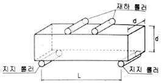
- 5d
- 5d+100
- 3d
- 3d+80
(정답률: 69%)
8. 공기 중의 이산화탄소 등과 콘크리트 중의 수산화칼슘이 반응함으로써 일어나는 현상으로 콘크리트 피복두께 이상으로 진행될 경우 철근의 부식을 초래하여 궁극적으로 구조물의 수명을 단축시키게 되는 것은?
- 탄산화
- 수화반응
- 동결융해 작용
- 알칼리-실리카 반응
(정답률: 58%)
9. 콘크리트의 크리프에 영향을 주는 요소에 대한 내용으로 옳은 것은?
- 응력이 클수록 크리프는 작다.
- 부재의 치수가 작을수록 크리프는 크다.
- 재하시의 재령이 작을수록 크리프는 작다.
- 배합 시 단위시멘트량이 많을수록 크리프는 작다.
(정답률: 45%)
10. 외력에 의하여 일어나는 응력을 소정의 한도까지 상쇄할 수 있도록 미리 인위적으로 그 응력의 분포와 크기를 정하여 내력을 준 콘크리트를 무엇이라고 하는가?
- 철근콘크리트
- 레디믹스트 콘크리트
- 프리플레이스트 콘크리트
- 프리스트레이스트 콘크리트
(정답률: 69%)
11. 30회 이상의 압축강도 시험으로부터 구한 압축강도의 표준편차가 4MPa일 때, 설계기준 압축강도 28MPa인 콘크리트를 제조하기 위한 배합강도는?
- 33.36MPa
- 33.82MPa
- 34.52MPa
- 36.53MPa
(정답률: 55%)
12. 잔골재의 절대용적이 0.29m3, 굵은 골재의 절대용적이 0.41m3인 콘크리트의 잔골재율은?
- 37.5%
- 38.9%
- 40.3%
- 41.4%
(정답률: 56%)
13. 시방배합 결과 콘크리트 1m3에 사용되는 물은 180kg, 시멘트는 390kg, 잔골재는 717.65kg, 굵은 골재는 1082.35kg이다. 현장 골재의 표면수량을 측정한 결과 잔골재의 표면수량은 2%, 굵은 골재의 표면 수량은 1%일 때, 현장배합에 필요한 단위 수량은?
- 145kg/m3
- 155kg/m3
- 2⑤kg/m3
- 232kg/m3
(정답률: 54%)
14. 콘크리트의 습윤양생에 관한 설명으로 틀린 것은?
- 습윤양생기간 중에 거푸집 판이 건조하더라도 살수를 해서는 안 된다.
- 막 양생을 할 경우에는 사용 전에 살포량 시공방법 등에 관하여 시험을 통하여 충분히 검토해야 한다.
- 콘크리트는 타설한 후 경화가 될 때까지 직사광선이나 바람에 의해 수분이 증발하지 않도록 방지해야 한다.
- 습윤양생 기간은 보통 포틀랜드시멘트를 사용하고 일 평균기온이 15℃ 이상인 경우에는 5일을 표준으로 한다.
(정답률: 69%)
15. 미리 거푸집 속에 특정한 입도를 가지는 굵은 골재를 채워놓고, 그 간극에 모르타르를 주입하여 제조한 콘크리트는?
- 숏크리트
- 공장 제품
- 프리캐스트 콘크리트
- 프리플레이스트 콘크리트
(정답률: 57%)
16. 시공이음에 대한 설명으로 틀린 것은?
- 시공이음은 될 수 있는 대로 전단력이 큰 위치에 설치해야 한다.
- 시공이음은 부재의 압축력이 작용하는 방향과 직각되게 하는 것이 원칙이다.
- 수밀을 요하는 콘크리트에 있어서는 소요의 수밀성이 얻어지도록 적절한 간격으로 시공이음부를 두어야 한다.
- 이음부의 시공에 있어서는 설계에 정해져 있는 이음의 위치와 구조는 지켜져야 한다.
(정답률: 50%)
17. PS강재를 긴장 정착할 때 즉시 발생하는 프리스트레스 손실원인에 해당하는 것은?
- 정착장치의 활동
- 콘크리트의 크리프
- 콘크리트의 건조수축
- PS강재의 릴랙세이션
(정답률: 40%)
18. 콘크리트의 재료분리에 관한 내용으로 틀린 것은?
- 재료분리 현상은 운반, 다지기작업 도중에도 계속 일어난다.
- AE제를 사용한 콘크리트는 재료분리 현상이 적게 일어난다.
- 블리딩이 큰 콘크리트는 재료분리 현상이 적게 일어난다.
- 단위골재량이 너무 많은 경우 재료분리현상이 크게 일어난다.
(정답률: 59%)
19. 외기온도가 25℃ 미만일 때 콘크리트의 비비기로부터 타설이 끝날 때까지의 시간은 원칙적으로 얼마를 넘어서는 안 되는가?
- 1.5시간
- 2시간
- 2.5시간
- 3시간
(정답률: 59%)
20. 고강도 콘크리트의 설계기준압축강도는 보통(중량)콘크리트에서 최소 몇 MPa이상 이어야 하는가?
- 30MPa
- 35MPa
- 40MPa
- 45MPa
(정답률: 60%)
2과목: 건설재료 및 시험
21. 시멘트 저장에 관한 설명으로 가장 적절한 것은?
- 통풍이 잘 되도록 환기구를 크게 설치한다.
- 쌓는 높이는 13포대 이하로 하며 장기간에 걸쳐 저장할 때는 7포대 이상 쌓아 올리지 않는 것이 좋다.
- 저장소의 바닥은 지상으로부터 10cm 이하의 거리를 두고 설치하는 것이 좋다.
- 입하 순서와 상관없이 저장고 가장 안쪽의 시멘트를 먼저 사용한다.
(정답률: 53%)
22. 다음 중 석유 아스팔트가 아닌 것은?
- 그라하마이트
- 블론 아스팔트
- 용제추출 아스팔트
- 스트레이트 아스팔트
(정답률: 46%)
23. 다음 설명의 의미하는 토목섬유의 종류는?
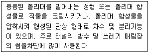
- 지오네트
- 지오그리드
- 지오멤브레인
- 지오텍스타일
(정답률: 46%)
24. 화강암에 대한 설명으로 틀린 것은?
- 내화성이 강해 고열을 받는 곳에 적합하다.
- 조직이 균일하고 내구성 및 강도가 크다.
- 경도 및 자중이 커서 가공 및 시공이 곤란하다.
- 균열이 적기 때문에 큰 재료를 채취할 수 있다.
(정답률: 52%)
25. 혼화재료의 일반적 사용목적이 아닌 것은?
- 콘크리트 워커빌리티를 개선한다.
- 강도 및 내구성을 증진시킨다.
- 응결, 경화 시간을 조절한다.
- 발열량을 증대시킨다.
(정답률: 57%)
26. 포졸란 반응(Pozzolan reaction)의 효과에 대한 설명으로 틀린 것은?
- 강도와 수밀성이 증대된다.
- 해수에 대한 화학 저항성이 향상된다.
- 재료분리가 적고 워커빌리티가 좋아진다.
- 단위 시멘트량이 증가되어 수화열이 커진다.
(정답률: 48%)
27. 다음 중 암석의 가공이나 채석에 이용되는 것으로 암석의 갈라지기 쉬운 면을 무엇이라 하는가?
- 층리
- 편리
- 석목
- 선상구조
(정답률: 36%)
28. 강에서 탄소의 함유량이 증가될 때 변화되는 강의 성질에 대한 설명으로 틀린 것은?
- 연신율이 작아진다.
- 인장강도가 증가된다.
- 경도가 증가된다.
- 항복점이 작아진다.
(정답률: 45%)
29. 다음 중에서 폭발력이 강하고 수중에서도 폭발할 수 있는 다이너마이트는?
- 스트레이트 다이너마이트
- 규조토 다이너마이트
- 분말상 다이너마이트
- 교질 다이너마이트
(정답률: 67%)
30. 단위용적질량이 1.7kg/L인 굵은 골재의 절건밀도가 2.65kg/L일 때 이 골재의 공극률은?
- 35.85%
- 42.74%
- 57.26%
- 64.15%
(정답률: 35%)
31. 다음 중 아스팔트의 품질을 확인하는 시험이 아닌 것은?
- 연화점 시험
- 잔 입자 시험
- 점도 시험
- 신도 시험
(정답률: 46%)
32. 잔골재의 조립률이 2.5이고 굵은 골재의 조립률이 6.5인 경우에 잔골재와 굵은 골재를 1:1.5의 비율로 혼합해 사용한다면 이때 혼합된 골재의 조립률은 얼마인가?
- 3.5
- 4.1
- 4.9
- 5.6
(정답률: 50%)
33. 아스팔트의 침입도에 대한 설명으로 틀린 것은?
- 아스팔트의 침입도는 일반적으로 온도상승에 따라 증가한다.
- 침입도 지수가 클수록 감온성이 저하된다.
- 침입도 시험의 목적은 연성을 조사하기 위해서이다.
- 아스팔트의 반죽질기를 나타내는 것이다.
(정답률: 43%)
34. 콘크리트용으로 요구되는 골재의 성질에 속하지 않는 것은?
- 골재는 깨끗하고 모양이 편평하거나 가늘고 길어야 한다.
- 골재는 크고 작은 알맹이의 혼합정도가 적당해야 한다.
- 골재는 강하고 내구성과 내화성을 가져야 한다.
- 골재는 진흑이나 유기 불순물 등의 유해물은 유해물함유량 한도 이상 함유해서는 안 된다.
(정답률: 68%)
35. 다음 중 목재의 변재(邊材)와 심재(心材)에 관한 설명으로 옳은 것은?
- 나무줄기의 중앙부로서 비교적 어두운 색을 나타내는 부분을 변재라 한다.
- 여름과 가을에 걸쳐 성장한 부분으로 조직이 치밀하고 단다하며 색깔도 짙은 부분을 심재라고 한다.
- 변재는 심재보다 강도, 내구성 등이 작다.
- 심재는 다공질이며, 숙액의 이동, 양분이 저장되는 곳이다.
(정답률: 60%)
36. 시멘트의 강도시험(KS L ISO 679)에 의해 시멘트 모르타르(cement mortar)의 압축강도 시험을 하기 위해 공시체를 제작하고자 한다. 이때 필요한 시멘트와 잔골재의 질량배합비율은?
- 1:2.55
- 1:2.65
- 1:2.7
- 1:3
(정답률: 52%)
37. 재료의 기계적 성질 중 외력을 받을 때 변형유발 정도를 표현하는 성질에 대한 용어는?
- 강성
- 경도
- 취성
- 전성
(정답률: 51%)
38. 분말도가 높은 시멘트의 특징에 대한 설명으로 틀린 것은?
- 수화작용이 빠르다.
- 조기강도가 작다.
- 워커빌리티가 좋다.
- 건조수축이 크다.
(정답률: 53%)
39. 용광로 방식의 제철작업에서 선철과 함께 생성되는 것을 물, 공기 등으로 급랭하여 입상화 한 것으로 콘크리트에 혼합하면 수밀성과 화학적 저항성 등이 좋아지고 장기강도가 커지는 혼화재는?
- 폴리머
- 실리카 퓸
- 플라이애시
- 고로슬래그 미분말
(정답률: 48%)
40. 공기 중 건조 상태의 골재 500g을 물속에 24시간 담근 후 측정한 골재의 질량이 515g이다. 이 골재를 다시 건조로에서 건조시켰을 때 절대 건조 질량이 485g이 되었다. 이 골재의 함수율은?
- 3.00%
- 3.09%
- 6.00%
- 6.19%
(정답률: 31%)
3과목: 건설시공학
41. 보강토 옹벽에 대한 설명으로 틀린 것은?
- 전면판과 보강재가 제품화됨으로써 공사기간을 단축시킬 수 있다.
- 금속재 전면판을 이용함으로써 골재의 절약하고 장거리 수송이 용이하다.
- 충격과 진동에 약한 구조로 얕은 성토에 유리하다.
- 부등침하에 대한 파괴위험이 적어 기초공사가 비교적 간단하다.
(정답률: 34%)
42. 지반개량공법 중 연약지반을 탈수하여 지반의 밀도증가를 기대하는 공법이 아닌 것은?
- 웰포인트공법
- 샌드드레인공법
- 시멘트주입공법
- 페이퍼드레인공법
(정답률: 43%)
43. 본바닥 토량이 1000m3이고 덤프트럭 1대로 운반하면 운반 소요 일수는? (단, 덤프트럭 1대 운반 적재량은 6m3, 1대 1일 운반 횟수는 20회, 토량 변화율(L)DMS 1.32이다.)
- 9일
- 11일
- 13일
- 15일
(정답률: 57%)
44. 노상이나 노반의 다짐이 완료되면 롤러나 재하 된 덤프트럭을 주행시켜 침하량을 측정하는 방법은?
- 엘라스타이트(elastite)
- 프루프 롤링(proof rooling)
- 히터 플레이너(heater planer)
- 마샬 안정도 시험(Marshall stability test)
(정답률: 52%)
45. 댐의 위치를 결정하기 위한 지형적인 조건으로 틀린 것은?
- 집수면적이 큰 곳이 좋다.
- 댐을 건설할 계곡의 폭이 좁고, 양안이 높고, 마주보고 있는 곳이 좋다.
- 댐 상류에 구릉이나 산릉에 둘러싸여 내부가 집수 분지를 이루고 있는 곳은 피하는 것이 좋다.
- 댐은 상류가 넓고, 다량의 저수가 가능하며, 홍수 시에 조절지로서의 역할을 할 수 있는 곳이 좋다.
(정답률: 50%)
46. 공기 케이슨 공법에 대한 설명으로 틀린 것은?
- 장애물의 제거가 쉽다.
- 케이슨병이 발생하므로 굴착 깊이에 제한이 있다.
- 보일링 현상이나 히빙 현상이 일어날 수 있어 인접구조물의 침하 우려가 있다.
- 시공 시에 토질 확인이 가능하며, 각종 시험을 통한 지지력 측정이 가능하다.
(정답률: 39%)
47. 아래 표와 같은 조건에서 불도저의 작업량을 산출할 때 사용하는 사이클타임(Cm)은?
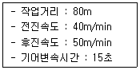
- 3.60min
- 3.85min
- 4.10min
- 4.35min
(정답률: 56%)
48. 보통 흙을 재료로 하여 1800m3의 성토 공사를 할 경우 굴착해야할 원지반 토량은 얼마인가? (단, 토량의 변화율은 C=0.90이다.)
- 1700m3
- 1800m3
- 1900m3
- 2000m3
(정답률: 56%)
49. 건설기계 중에서 셔블(shovel)계 굴착기에 포함되지 않는 것은?
- 백호(Back boe)
- 클램셀(Clamshell)
- 드래그라인(Drag line)
- 모터 그레이더(Motor grader)
(정답률: 40%)
50. 옹벽의 안정성 검토 시 고려사항이 아닌 것은?
- 활동에 대한 안정
- 전도에 대한 안정
- 유효응력에 대한 안정
- 지반의 지지력에 대한 안정
(정답률: 54%)
51. 1개의 간선 집수거 또는 집수거에 많은 흡수거를 합류시켜 배치하면 집수지거를 향하여 지형이 완만한 구배로 경사되어 있고 습윤상태가 같은 정도의 곳에 적합한 암거 배열 방식은?
- 빗식 배열 방식
- 집단식 배열 방식
- 차단식 배열 방식
- 어골식 배열 방식
(정답률: 53%)
52. 심빼기 부분에 수직한 평행공을 다수 천공하여 장약량을 집중시키고 순발뇌관으로 폭파시켜 폭파 쇼크에 의하여 심빼기 하는 방법은?
- 노 컷
- 번 컷
- V 컷
- 스윙 컷
(정답률: 25%)
53. 지름 40cm의 나무말뚝 36본을 박아서 기초저판을 지지하고 있다. 말뚝의 배치를 6열로 하고 각 열을 등간격으로 6본씩 받았을 때 군항의 효율은? (단, 말뚝의 중심 간격은 1.0m이며, Converse-Labarre식을 사용한다.)
- 0.596
- 0.696
- 0.796
- 0.896
(정답률: 13%)
54. 시멘트 콘크리트 포장의 종류 중 아래의 표에서 설명하는 것은?
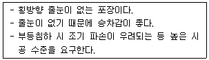
- 무근 콘크리트 포장(JCP)
- 철근콘크리트 포장(JRCP)
- 롤러 전압 콘크리트 포장(RCCP)
- 연속 철근콘크리트 포장(CRCP)
(정답률: 46%)
55. 토량변화율 L을 나타낸 식으로 옳은 것은?
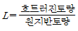
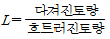
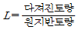
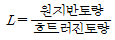
(정답률: 45%)
56. 아래 그림의 교대에서 D부분의 명칭은?
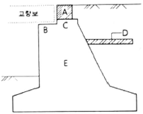
- 교좌
- 흉벽
- 날개벽
- 답괘판
(정답률: 51%)
57. 터널의 보강을 위한 숏크리트(Shotcrete)에서 건식법의 특징으로 틀린 것은?
- 분진 발생량이 많다.
- 리바운드(Rebound)량이 적다.
- 운반거리를 습식법 보다 길게 할 수 있다.
- 작업원의 숙련도에 따라 품질변동이 심하다.
(정답률: 50%)
58. 다음과 같은 공정표에서 주공정이 옳게 표기된 것은?
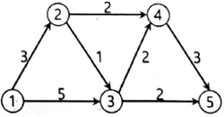
- ①-③-⑤
- ①-③-④-⑤
- ①-②-④-⑤
- ①-②-③-④-⑤
(정답률: 60%)
59. 말뚝기초에서 부마찰력이 발생하는 원인이 아닌 것은?
- 표면적이 작은 말뚝으로 시공한 경우
- 말뚝의 타입 지반이 압밀 진행중인 경우
- 지하수위의 감소로 체적이 감소하는 경우
- 말뚝의 변화량 보다 지반의 침하량이 큰 경우
(정답률: 43%)
60. 아래의 표는 장대교 시공법의 특징에 대한 설명이다. 다음 중 어느 공법에 대한 설명인가?
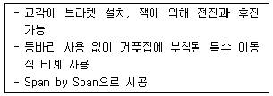
- FSM공법
- FCM공법
- MSS공법
- ILM공법
(정답률: 48%)
4과목: 토질 및 기초
61. 흑의 전단강도에 대한 설명으로 틀린 것은?
- 흙의 전단강도와 압축강도는 밀접한 관계에 있다.
- 흙의 전단강도는 입자간의 내부마찰각과 점차력으로부터 주어진다.
- 외력이 증가하면 전단응력에 의해서 내부의 어느 면을 따라 활동이 일어나 파괴된다.
- 일반적으로 사질토는 내부마찰각이 작고 점성토는 점착력이 작다.
(정답률: 54%)
62. 그림과 같은 파괴 포락선 중 완전 포화된 점성토에 대해 비압밀비배수 삼축압축(UU)시험을 했을 때 생기는 파괴포락선은 어느 것인가?
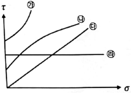
- ㉮
- ㉯
- ㉰
- ㉱
(정답률: 45%)
63. 주동토압을 PA, 정지토압을 PO, 수동토압 PP라 할 때 크기의 비교로 옳은 것은?
- PA ＞ PO ＞ PPP
- PPP ＞ PA ＞ PO
- PO ＞ PA ＞ PPP
- PPP ＞ PO ＞ PA
(정답률: 60%)
64. 흙의 다짐 특성에 대한 설명으로 옳은 것은?
- 다짐에 의하여 흙의 밀도와 압축성은 증가된다.
- 세립토가 조립토에 비하여 최대건조밀도가 큰 편이다.
- 점성토를 최적함수비보다 습윤측으로 다지면 이산구조를 가진다.
- 세립토는 조립도에 비하여 다짐 곡선의 기울기가 급하다.
(정답률: 33%)
65. 흙의 다짐 에너지에 대한 설명으로 틀린 것은?
- 다짐 에너지는 램머(rammer)의 중량에 비례한다.
- 다짐 에너지는 램머(rammer)의 낙하고에 비례한다.
- 다짐 에너지는 시료의 체적에 비례한다.
- 다짐 에너지는 타격수에 비례한다.
(정답률: 57%)
66. 말뚝기초에서 부주면마찰력(negative skin friction)에 대한 설명으로 틀린 것은?
- 지하수위 저하로 지반이 침하할 때 발생한다.
- 지반이 압밀진행중인 연약점토 지반인 경우에 발생한다.
- 발생이 예상되면 대책으로 말뚝주면에 역청등으로 코팅하는 것이 좋다.
- 말뚝주면에 상방향으로 작용하는 마찰력이다.
(정답률: 51%)
67. 말뚝의 재하시험 시 연약점토 지반인 경우는 말뚝 타입 후 소정의 시간이 경과한 후 말뚝재하시험을 한다. 그 이유로 옳은 것은?
- 부 마찰력이 생겼기 때문이다.
- 타입 된 말뚝에 의해 흙이 팽창되었기 때문이다.
- 타입 시 말뚝주변의 흙의 교란되었기 때문이다.
- 주면 마찰력이 너무 크게 작용하였기 때문이다.
(정답률: 55%)
68. 두께 6m의 점토층에서 시료를 채취하여 압밀시험한 결과 하중강도가 200kN/m2에서 400kN/m2으로 증가되고 간극비는 2.0에서 1.8로 감소하였다. 이 시료의 압축계수(av)는?
- 0.001m2/kN
- 0.003m2/kN
- 0.006m2/kN
- 0.008m2/kN
(정답률: 28%)
69. 사질토 지반에 있어서 강성기초의 접지 압분포에 대한 설명으로 옳은 것은?
- 기초 밑면에서의 응력은 불규칙하다.
- 기초의 중앙부에서 최대응력이 발생한다.
- 기초의 밑면에서는 어느 부분이나 응력이 동일하다.
- 기초의 모서리 부분에서 최대응력이 발생한다.
(정답률: 49%)
70. 흙의 투수계수에 대한 설명으로 틀린 것은?
- 투수계수는 온도와는 관계가 없다.
- 투수계수는 물의 점성과 관계가 있다.
- 흙의 투수계수는 보통 Darcy 법칙에 의하여 정해진다.
- 모래의 투수게수는 간극비나 흙의 형상과 관계가 있다.
(정답률: 30%)
71. 도로의 평판 재하 시험(KS F 2310)에서 변위계 지지대의지지 다리 위치는 재하판 및 지지력 장치의 지지점에서 몇 m 이상 떨어져 설치하여야 하는가?
- 0.25m
- 0.50m
- 0.75m
- 1.00m
(정답률: 38%)
72. 연약지반 개량공법에서 Sand Drain공법과 비교한 Paper Drain공법의 특징이 아닌 것은?
- 공사비가 비싸다.
- 시공속도가 빠르다.
- 타입 시 주변 지반 교란이 적다.
- Drain 단면이 깊이 방향에 대해 일정하다.
(정답률: 42%)
73. 흙 속의 물이 얼어서 빙충(ice lens)이 형성되기 때문에 지표면이 떠오르는 현상은?
- 연화현상
- 동상현상
- 분사현상
- 다일러턴시
(정답률: 60%)
74. 흙의 연경도에 대한 설명 중 틀린 것은?
- 액성한계는 유동곡선에서 낙하회수 25회에 대한 함수비를 말한다.
- 수축한계 시험에서 수은을 이용하여 건조토의 무게를 정한다.
- 흙의 액성한계·소성한계 시험은 425㎛체를 통과한 시료를 사용한다.
- 소성한계는 시료를 실 모양으로 늘렸을 때, 시료가 3mm의 굵기에서 끊어 질 때의 함수비를 말한다.
(정답률: 34%)
75. 어떤 퇴적지반의 수평방향 투수계수가 4.0×10-3cm/s, 수직방향 투수계수가 3.0×10-3cm/s일 때 이 지반의 등가 등방성 투수계수는 얼마인가?
- 3.46×10-3cm/s
- 5.0×10-3cm/s
- 6.0×10-3cm/s
- 6.93×10-3cm/s
(정답률: 45%)
76. 분할법으로 사면인정 해석 시에 가장 먼저 결정되어야 할 사항은?
- 가상파괴 활동면
- 분할 세편의 중량
- 활동면상의 마찰력
- 각 세편의 간극수압
(정답률: 52%)
77. 어느 모래층의 간극률이 20%, 비중이 2.65이다. 이 모래의 한계 동수경사는?
- 1.28
- 1.32
- 1.38
- 1.42
(정답률: 51%)
78. 포화점토에 대해 베인전단시험을 실시하였다. 베인의 지름과 높이는 각각 75mm와 150mm이고 시험 중 사용한 최대 회전 모멘트는 300N·m, 점성토의 비배수 전단강도(cu)는?
- 1.62N/m2
- 1.94N/m2
- 16.2N/m2
- 19.4N/m2
(정답률: 17%)
79. 2면 직접전단시험에서 전단력이 300N, 시료의 단면적이 10cm2일 때의 전단응력은?
- 75kN/m2
- 150kN/m2
- 300kN/m2
- 600kN/m2
(정답률: 50%)
80. 통일분류법에서 실트질 자갈을 표시하는 기호는?
- GW
- GP
- GM
- GC
(정답률: 60%)